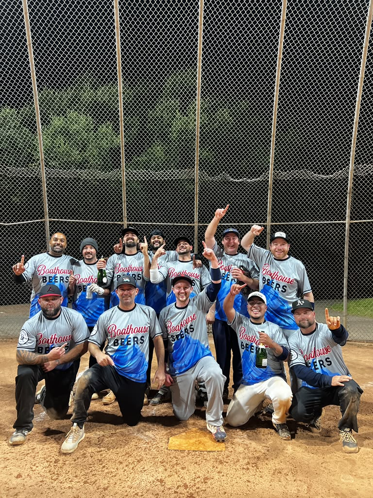

Boathouse Beers (2) vs. Old Sparts (3)
The Old Sparts held the Beers scoreless through the first three innings and built a 6–0 lead. The Beers scored five in the fourth, then added eleven more to win by mercy rule after six innings.
16-run rally
The Boathouse Beers play Tuesday nights at Lower Washington Park in Alameda, California.
Championship recap
After falling behind early in the semifinal, the bats came alive and the Beers carried that momentum into the title game.
The Old Sparts held the Beers scoreless through the first three innings and built a 6–0 lead. The Beers scored five in the fourth, then added eleven more to win by mercy rule after six innings.
Boathouse went three-up, three-down in the top of the first, then found a way to finish the season on top.
2026 spring season
Highlights preserved from the original Softball Beers site.
The Old Sparts gave the Boathouse Beers a tough game. Going into the fifth, Boathouse was down one and scored one. With five minutes left, the Old Sparts scored seven and ran out the clock.
The Beers beat the Exelorators 21–15. The game opened with a 6–4–3 double play, and the bats stayed hot. Tied at 15 entering the fifth, the Beers held the opposition scoreless and put up nine runs.
Home runs: Hanley 2, Justin, Chris, Jeff and Shane.
Two first-inning home runs from Justin and Chris set the tone. Boathouse held the Exelorators scoreless in the fifth and finished the game with a nine-run surge.
The Lum Bums found the gaps and pulled away by ten runs. Shane McDermott and Justin Green led the Boathouse offense with a home run each.
Home runs: Shane McDermott and Justin Green. Landed can flip: Nigel Singh.
Boathouse started the season with a win against the Exelorators. The defense opened with a double play and the lineup produced five home runs.
The squad
| Number | Name | Hometown |
|---|---|---|
| 4 | Sean Hanley | Lunenburg, MA |
| 34 | Dan Grossman | Lunenburg, MA |
| 13 | Eric Greene | Tracy, CA |
| 3 | Mike Ginsburg | Alameda, CA |
| 28 | Shane McDermott | Kingston, NY |
| 19 | Jeffrey Mena | San Francisco, CA |
| 8 | Chris Pereira | Alameda, CA |
| 6 | Justin Green | Alameda, CA |
| 30 | Nigel Singh | Oakland, CA |
| 11 | Jeremy Wright | Oakland, CA |
From the archive
Original team photos preserved from the old Softball Beers site.

Know the game
After finishing a beer, a player gets one flip. Call a teammate’s name before the flip. If the empty can lands upright, that teammate takes the shotgun.
The can must complete at least a half rotation.A swinging or looking strikeout means owing the team a 30-pack and wearing the pink tutu until the coach decides otherwise.
A foul-out does not count as a strikeout.At-bats begin with a 1–1 count. Games run seven innings or one hour. The first four innings have a five-run limit; later innings are open.
Run past home plate to the right—do not touch home.Slow-pitch bats marked ASA or USA are allowed. USSSA-only bats are not. A bat carrying both stamps is permitted.
Shop approved-style batsBuilt since 2023
Established by Sean Hanley in August 2023, the Beers joined Alameda’s Tuesday Lower League and reached the championship in their first season.
Washington Park C · Men’s Lower champions.
Fall: 2–8 in Alameda’s B-level upper division. Spring: 2–5–2.
Five regular-season wins, a 16–5 semifinal victory and a runner-up finish.
A 6–3–1 record and a championship appearance in the team’s debut.
The Oakland Wednesday-night team played in the C League and won the 2022 summer championship.
2023 roster: JP Cart, Luke Pulaski, Benjie Achtenberg, Gable McCarthy, Sean Hanley, Seth Schreiberg, Rudy Meza, Josh Freund, Charles Buffa, Elan Emanuel, Benjamin Altman and Sean McTigue.
A rain-delayed opener ended in a 9–8 walk-off win over Auntie Slayers. Sean Hanley homered and Jeffrey Mena recorded a strikeout.
Off the field
The newest chapter in a tradition that started at the Boathouse Tavern in 2023.
Held on the coach’s birthday, July 26, 2025.
The second annual team banquet, held December 10, 2024.
The first annual Beers banquet, held December 5, 2023.
Official team sponsor
The Boathouse Tavern on Clement Avenue is the Beers’ home away from the field—our go-to spot for post-game celebrations and end-of-season banquets.
Open seven days a week, until midnight Thursday through Saturday and until 10 p.m. Sunday through Wednesday.
Visit Boathouse TavernGear up
New silver-bullet edition team jerseys are available for $28 each when ordering six or more.
Custom Boathouse Beers jerseys for the squad.
Batting gloves, training gear and protective equipment. Purchases made through the team link may earn Softball Beers a commission.
Visit Franklin SportsCustom jersey options inspired by the movie BASEketball. Delivery typically takes 20–40 days and quality may vary.
Order on DHgateSome shop links are affiliate links. SoftballBeers.com may receive a commission on qualifying purchases.
About the Beers
Sean Hanley established the team in August 2023 after previously managing a 20–7 men’s slow-pitch team in Central Massachusetts and playing with the Oakland Shots.
The California roster brought together players from the Shots, Hayward’s Wildcard, friends and family. The name “The Beers” comes from the movie BASEketball.
The idea is simple: play hard, find ways to win and enjoy time together after the game.
Get in touch
Questions about the team, schedule, partnerships or the site?